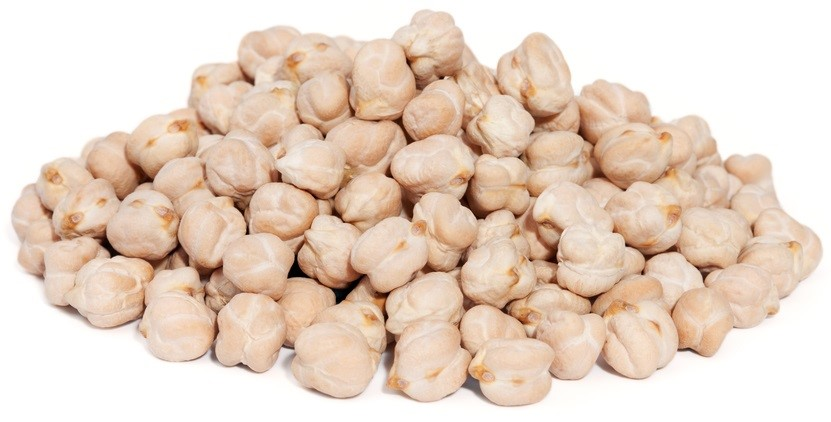
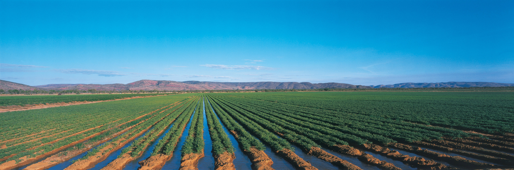
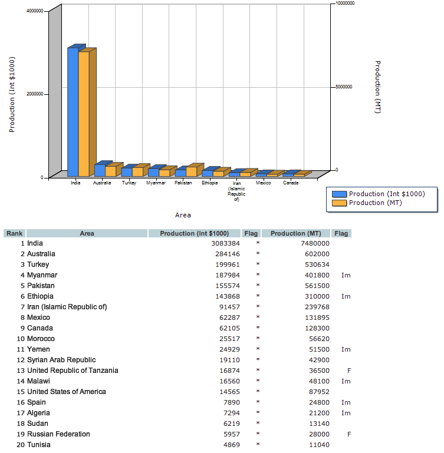
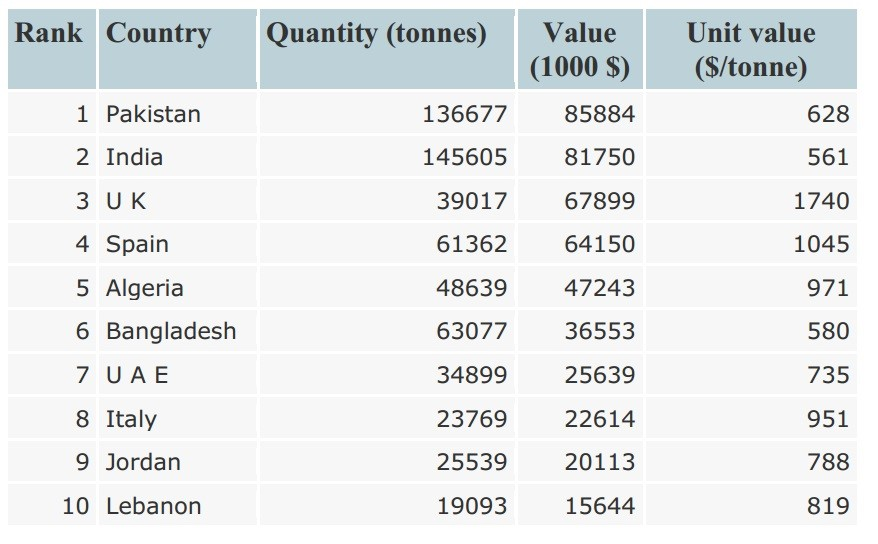
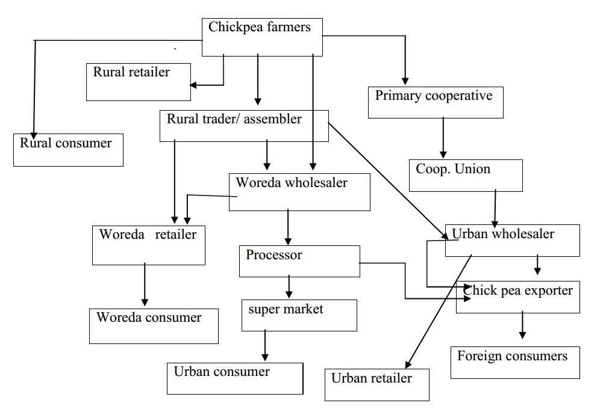
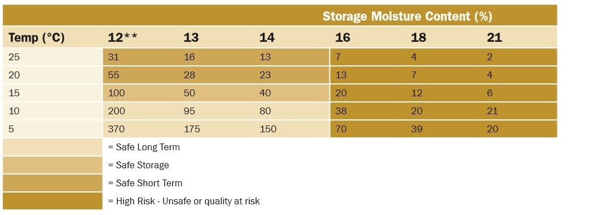
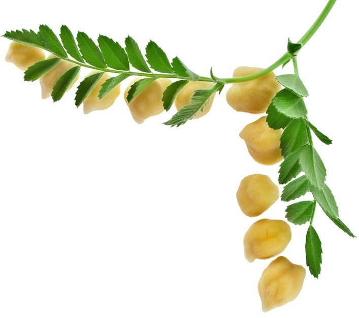

Chickpeas

- Chickpea or chana is a very important pulse crop that grows as a seed of a plant named Cicer arietinum in the Leguminosae family. This light brown colored pulse is considered to be a good source of protein and is also called by the name of Garbanzo beans. Chana is used as an edible seed and is also used for making flour throughout the globe. Having a capacity to stand in drought conditions, this crop doesn’t have the requirement of being fed with nitrogen fertilizers.
- The varieties of chana or chickpea are separated on the basis the seed size, color and taste. Two of those varieties, namely Kabuli and Desi, as they are termed in India, are very important in terms of usage and commercial purposes.
Chickpea fields
- In areas where chickpea is adapted, the physi- cal properties of the field should be considered. Well-drained soils are best suited for chickpea production. The short stature of the plant will result in the crop being cut fairly low, although most pods will be formed a few inches above the soil surface.

Uses
- Mature chickpeas can be cooked and eaten cold in salads, cooked in stews, ground into a flour called gram flour (also known as chickpea flour and besan and used frequently in Indian cuisine), ground and shaped in balls and fried as falafel, stirred into a batter and baked to make farinata or panelle.
Chickpea types

- Desi chickpeas have relatively small, light brown angular seeds that are used for split pea (dahl) or flour after the hulls are removed. The main markets for this seed type are India and Pakistan. India, our main buyer, prefers larger, light-coloured grain. Desi varieties are the most widely grown under dryland production in Queensland. With effective management, Desi chickpeas are also suitable for irrigated production.
World market
- Most production and consumption of chickpea (95%) takes place in developing countries. It was grown on about 11.9 million hectares in 2010. Chickpea production has increased over the past 30 years from 6.6 million metric tons to 10.0 million metric tons. Most chickpeas are grown in South Asia, which accounts for more than 75% of the world chickpea area. India is by far the largest chickpea producing country. Over the period 1978–80 to 2008–10, the area under chickpea in India increased marginally from 7.6 million hectares to 7.9 million hectares, but production increased by 40% (from 4.8 to 6.8 million metric tons). Other important chickpea producing countries are Pakistan, Turkey, Mexico, Canada and Australia.
World production

Global chickpea Export
- The major chickpea growing countries are India, Pakistan, Turkey, Iran, Myanmar and Iraq in Asia, Ethiopia in Africa, Mexico, Canada and Australia. Ethiopia ranks fifth in the world production of chickpea amounting 253.87 thousand metric tones. Ethiopia’s current share in the global markets is limited as compared to its potential. 'Kabuli' type chickpeas (Mediterranean and Middle Eastern origin) generally have larger bean sizes which grow well under irrigation. Desi chickpeas have smaller seeds. Hybrids between Kabuli and Desi have produced strains with medium-size seeds and fair yields. Chickpea is one of the important pulses traded globally. The top ten chickpea exporting countries are India, Australia, Mexico, Canada, Myanmar, Ethiopia, USA, Tanzania and Kazakhstan.

Global chickpea Import
- When we see the major importing countries, Pakistan, India, UK, Spain, Algeria, Bangladesh, UAE, Italy, Jordan and Lebanon are the major ones. Many of the importers have proximity to Ethiopia providing the country a comparative advantage to be taken as an opportunity to export chickpea at competitive prices.

- However, harnessing this huge market opportunity requires boosting the production of market-preferred high valued variety. Unless marketable surplus is enhanced through the application of technology and /or expansion of land cover, it will be difficult to if not impossible to satisfy the local demand while expanding chickpea exports.
Chickpea supply chain

Market Influencing Factors
- Rainfall level and level of moisture in the soil
- Obstruction in the information movement
- Black-marketing and hoarding
- Crop situation in the countries from where India imports the crop
- Prices of the other competitive pulses produced
Post-Harvest Storage and Handling
- Chickpea should be handled in a manner similar to other pulse crops. The irregular seed shape with the exposed beak can lead to increased mechanical damage when handling. The use of conveyors instead of augers can reduce damage. Aeration can improve storage by reducing seed moisture and temperature. Seed should be stored at 14 per cent moisture or less. Stored chickpea should be checked at intervals for moisture and temperature levels to avoid spoilage loss. Large seed can often test dry, but still be moist in the center.

Conclusion
- Chickpea is grown in many areas, as a food crop, as a cash crop and for soil fertility restoration. The crop is planted on deep black soils after mid August to be grown using residual soil moisture. Ethiopia has suitable agro-climatic conditions for chickpea production. However, due to various constraints such as the poor quality seeds, insufficient seed production and marketing systems and poor product quality etc., the country did not benefit from chickpea export in the past. Chickpea is a very important foreign exchange earning crop next to coffee, sesame and haricot bean. The chickpea marketing system is generally characterized by low volumes, scattered and fragmented suppliers, complex supply chains, high transaction costs, lack of reliable sources of market information, and lack of quality control and grading systems. The predominance of low value local varieties and high transaction costs make exports unattractive. Since the country is landlocked and does not have cheaper means of transporting bulky commodities, transport costs undermine the competitiveness of exports. Along with low yields and limited volume of production that also limit competitiveness, an overwhelming proportion of the national surplus is traded in domestic markets. In the long-term, Ethiopia’s competitiveness in chickpea exports would critically depend on improving productivity, enhancing grain quality and ability to consistently supply required volumes of market-preferred products at competitive prices.
